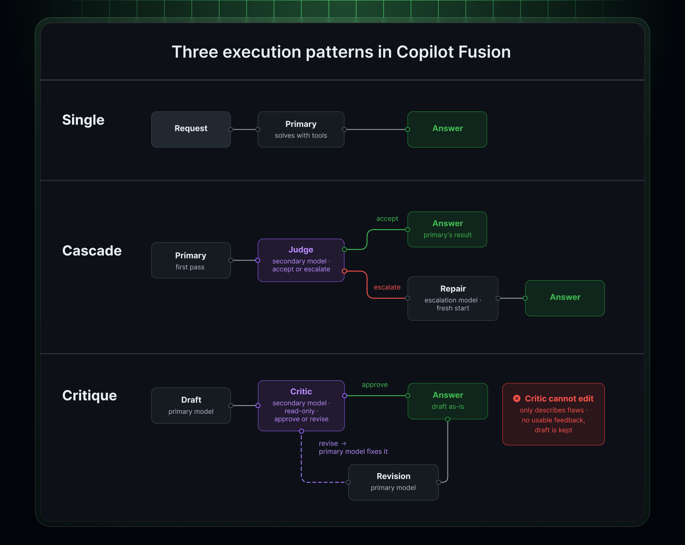
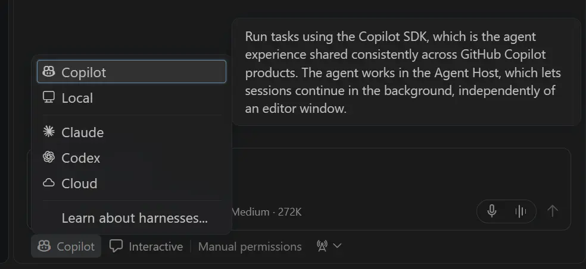
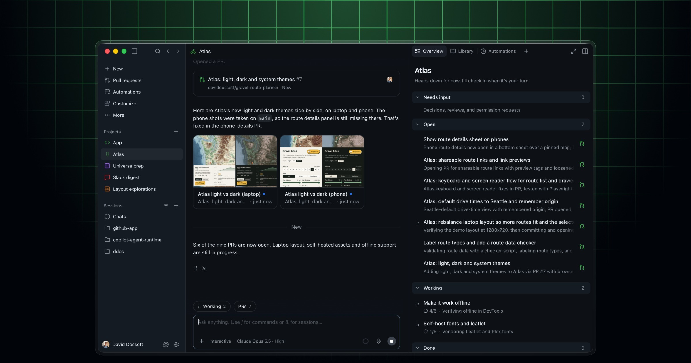

Copilot fundamentals
What it is, models, surfaces, coding agents, sandboxes, workflows, MCPs, skills, use cases, and guardrails.
$ copilot learn --then-do
First, understand the platform. Then, watch it move grounded context into useful GitHub work.
Marta Lacasta
Copilot fundamentals + end-to-end demo
What it is, models, surfaces, coding agents, sandboxes, workflows, MCPs, skills, use cases, and guardrails.
Question → connected context → source validation → GitHub artifact → review → next step.
Final 15 minutes: questions, setup pointers, and buffer. We can finish early when the outcomes are met.
Completes, explains, drafts, transforms, and keeps you in flow.
Plans, edits, runs tools, verifies, and iterates toward an outcome.
Models, context, tools, policies, customizations, workflows, and agents.
The interface changes. The human responsibility does not: you define the outcome and decide what is ready.
Predict the next line or block.
Explain, transform, and answer in context.
More models, context, and customization.
Plan, edit, run tools, and open pull requests.
Projects, connected tools, orchestration, and automations.
The useful question changed from “What code can it suggest?” to “What outcome can we safely move forward?”
Copilot supports model choice across multiple providers. The useful choice is not always a model name; it can be the routing strategy and effort level.

Completions, chat, plan, agents, tests, review, and local tools.
Issues, pull requests, code review, repositories, and cloud agents.
Terminal-native sessions with local files, GitHub, MCPs, skills, and tools.
Projects, sessions, delegation, connected context, review, and cross-client continuity.

Choose the surface where the context is strongest and the result is easiest to review. Sessions can increasingly continue across clients.
More autonomy increases the value of clear scope, explicit constraints, checkpoints, and evidence.
Runs on your machine with operating-system restrictions on agent tool access to files, network, and credentials.
Runs the whole session in an isolated GitHub-hosted environment that you can steer across clients.
Runs repository-scoped work in a configured Actions development environment.
Agent sessions and sandboxes · Copilot code review · Agent Merge
MCP is the connection, not the answer. Permissions, freshness, scope, ownership, and source quality still matter.
Provide access to systems and actions.
Package instructions for meeting prep, research, review, investigation, or creation.
Capture commands, conventions, boundaries, and what “done” means.
Make stable task shapes reusable and observable.
Inspect [scope]. Produce [outcome]. Preserve [boundaries]. Verify with [evidence]. Stop before [approval point].
Snapshot: 30 October 2026. Preview and rollout status varies.

Explain a repository, initiative, acronym, team, code path, or historical decision with sources.
Connect calendar, documents, Slack, people, and GitHub activity into a focused briefing.
Turn a decision into an issue, pull request description, documentation change, or next action.
Plan, implement, test, and review a bounded change using repository instructions.
Trace Actions failures, logs, code, deployments, and operational context.
Schedule dependable summaries, checks, triage, or repository routines.
Do not include secrets, credentials, customer data, or unnecessarily sensitive personal information.
Check dates, authors, ownership, permissions, relevance, and conflicting guidance.
Inspect generated content, commands, diffs, tests, audience, and user-visible impact.
Policy, legal, HR, security, access, and people decisions need the official system or owner.
Context → contribution → review
Question → context → action → review → next step
Thank you. Marta Lacasta
martalacasta.github.io/copilot-101-marta